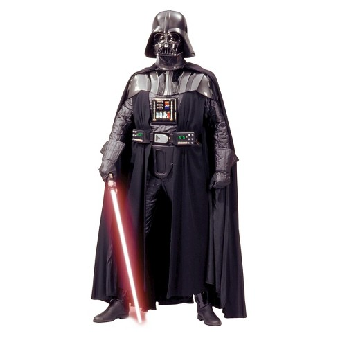
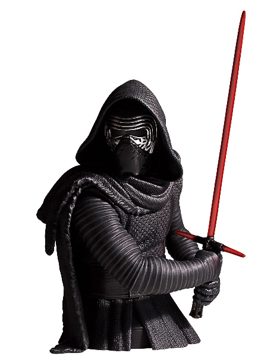
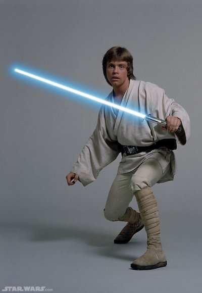
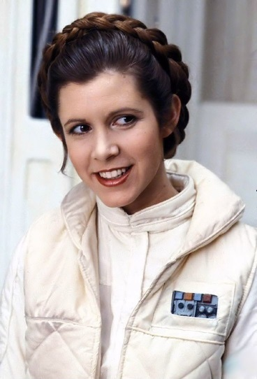

Sheev Palpatine

Sheev Palpatine, alias Dark Sidious (Darth Sidious en anglais) est un personnage de fiction, seigneur noir
des
Sith et homme politique dans la saga Star Wars créée par George Lucas.
Il est le maître de Dark Maul, Dark Tyrannus, et Dark Vador.
Personnage central de la première trilogie, il apparaît pour la première fois dans le cinquième épisode,
L'Empire contre-attaque (sorti en 1980). Il est interprété par Ian McDiarmid dans les deux trilogies.
Originaire de Naboo, Palpatine a été formé au côté obscur de la Force dès le plus jeune âge par son maître,
Dark
Plagueis. Il se fixe comme mission de rétablir l'Ordre Sith et de détruire les Jedi, grâce à un vaste
complot
mené à l'échelle de la Galaxie.
Utilisant sa maîtrise du côté obscur, ses talents d'homme politique et sa connaissance des rouages de la
République, il devient sénateur de la planète Naboo au Sénat galactique en 52 av. BY, puis Chancelier
Suprême de
la République galactique en 32 av. BY (épisode I).
Réussissant à dissimuler soigneusement son identité de seigneur noir des Sith, Palpatine profite de la crise
de
sécession qu'il a secrètement incitée pour se faire voter les pleins pouvoirs par le sénat en 22 av. BY.
Contrôlant à la fois les Séparatistes et la République, il veille à faire durer la guerre des clones, lui
permettant ainsi d'accroître sa mainmise sur la Galaxie.
En 19 av. BY, après avoir mis en œuvre la grande purge Jedi, il s'autoproclame empereur devant le sénat, et
transforme la République en un Empire. Il fait sombrer le Jedi Anakin Skywalker dans le côté obscur de la
Force
et en fait Dark Vador, son nouvel élève et bras droit. Le règne de Palpatine s'achève dans l'épisode VI, à
la
fin duquel il est tué par Dark Vador, en l'an 4 ap. BY.
Darth Vader
Anakin Skywalker, ou Dark Vador (en anglais : Darth Vader), est un personnage de fiction, successivement
chevalier Jedi et seigneur Sith, et le personnage central des deux premières trilogies de la saga
cinématographique Star Wars conçue par George Lucas.
Dans la trilogie originale composée d'Un nouvel espoir (1977), de L'Empire contre-attaque (1980) et du
Retour du
Jedi (1983), il est présenté sous le nom de Dark Vador, un cyborg menaçant vêtu et masqué de noir, au
service de
l'Empereur Palpatine. Il incarne alors le principal méchant de l'histoire. Dark Vador apparaît également
dans le
film dérivé Rogue One (2016), dont les événements se situent juste avant l'épisode IV.
La prélogie, composée de La Menace fantôme (1999), L'Attaque des clones (2002) et La Revanche des Sith
(2005),
explore l'enfance et la jeunesse d'Anakin Skywalker, détaillant les raisons et les circonstances de sa
transformation en personnage malfaisant.
Son éducation en tant que Jedi auprès d'Obi-Wan Kenobi, son basculement du côté obscur de la Force pour
devenir
l'apprenti et le bras armé de l'empereur Palpatine, sa rédemption finale lui permettant d'accomplir sa
destinée
— ramener l'équilibre dans la Force et éliminer les Sith — et le fait qu'il soit le père des jumeaux Luke
Skywalker et Leia Organa, constituent l'intrigue principale des deux premières trilogies.
Kylo Ren
Ben Solo, alias Kylo Ren, est un personnage de fiction de l'univers de Star Wars, apparu pour la première
fois
dans le film Le Réveil de la Force, premier épisode de la troisième trilogie. Il y fait office de principal
antagoniste en tant que leader des chevaliers de ren, puis Suprême leader du Premier Ordre, statut qui fait
de
lui le digne successeur de Dark Vador, méchant emblématique de la trilogie originale — qui n'est autre que
son
grand-père.
Fils de Leia Organa et de Han Solo, Ben a initialement reçu la formation de Luke Skywalker pour devenir un
Jedi.
Toutefois, il est passé du côté obscur de la Force, et s'est mis au service du Premier Ordre et de son
suprême
leader, Snoke. Il assassine son père dans Le Réveil de la Force, ce qui constitue un fait marquant de ce
film.
Puis, dans l'épisode suivant, Les Derniers Jedi, il exécute également son maître Snoke et prend sa place
comme
suprême leader du Premier Ordre.
Kylo Ren est interprété par Adam Driver, dont la performance dans l'épisode VIII a été saluée par de
nombreuses
critiques positives.
Luke Skywalker
Luke Skywalker est un personnage fictif de la saga Star Wars. Il est le fils d'Anakin Skywalker et de Padmé
Amidala et le frère jumeau de la princesse Leia Organa. Il naît en 19 av. BY dans La Revanche des Sith. Il
devient un chevalier Jedi et le héros de l'Alliance rebelle pendant la Guerre Civile Galactique dans Un
nouvel
espoir, L'Empire contre-attaque, Le Retour du Jedi.
Trois décennies plus tard, dans Le Réveil de la Force, il vit exilé sur une planète reculée après avoir
échoué à
reformer l'ordre Jedi. Dans Les Derniers Jedi, il accepte, non sans réticence, de donner quelques
enseignements
à Rey. Il disparaît après avoir été considérablement affaibli par sa confrontation, à travers la Force, avec
son
ancien apprenti Ben Solo (alias Kylo Ren).
Rey

Rey est un personnage de fiction de l'univers Star Wars. Lors de sa première apparition, dans Star Wars,
épisode
VII : Le Réveil de la Force (2015), où elle tient le rôle principal, elle est une jeune pilleuse d'épaves
solitaire vivant sur la planète Jakku où elle a été abandonnée enfant. Rey rencontre le droïde BB-8, le
stormtrooper en fuite Finn, puis Han Solo, Chewbacca et le pilote Poe Dameron, et rejoint rapidement les
rangs
de la Résistance qui lutte contre le Premier Ordre, sous les ordres de la générale Leia Organa. Rey se
découvre
sensible à la Force, qu'elle se met progressivement à contrôler, d'où le titre du film. À la fin de
celui-ci,
elle affronte et domine le maléfique Kylo Ren, puis retrouve Luke Skywalker.
Dans l'épisode suivant, Les Derniers Jedi, elle avance sur le chemin qui doit l'amener à devenir chevalier
Jedi,
à travers des leçons données par Luke, dans ses paroles aussi, celui-ci affirmant à la fin du film qu'il
n'est
pas le dernier Jedi, et dans sa confrontation indirecte et directe avec Kylo Ren, qui devient pour sa part
le
nouveau Leader Suprême du Premier Ordre. Rey sauve les derniers éléments de la Résistance à la fin de cet
épisode, dégageant pour eux un important éboulement de rochers en utilisant la Force, alors qu'ils sont
pourchassés et coincés au fond d'une mine. Dans cette deuxième partie de la trilogie, la question de ses
origines familiales est évacuée par des propos de Kylo Ren : ses parents sont « juste des moins que rien,
des
ferrailleurs qui ont vendu leur fille pour un peu d'argent ». La raison pour laquelle la Force est si
puissante
en elle reste donc inconnue.
Leia Organa
a princesse Leia Organa d'Alderaan, plus simplement appelée Princesse Leia, est un personnage de fiction,
femme
politique sensible à la Force dans l'univers de Star Wars, née en 19 av. BY au Centre médical de la
République
sur Polis Massa. Elle est interprétée par Carrie Fisher dans les première et troisième trilogies de la saga.
L'actrice qui a personnifié Leia depuis le premier film de la saga en 1977 est morte à 60 ans le 27 décembre
2016.
Leia est la fille du légendaire Jedi Anakin Skywalker et de l'ex-reine Padmé Amidala, sénatrice de Naboo.
Elle
est également la sœur jumelle du chevalier Jedi Luke Skywalker. Sa mère meurt en leur donnant naissance
tandis
que son père bascule du côté obscur de la Force sous le nom de Dark Vador. Leia bébé est alors cachée et
adoptée
par la reine Breha Antilles Organa et son mari, le sénateur et prince consort Bail Organa, souverains de la
planète Alderaan.
La nouvelle princesse Leia d'Alderaan est élue à l'âge de 18 ans, en 1 avant BY, représentante d'Alderaan au
Sénat impérial, suivant ainsi la trace de son père adoptif et, sans le savoir, celle de sa mère biologique.
Tout
au moins avant la dissolution du Sénat impérial ordonnée par l'empereur Palpatine, alias Dark Sidious, qui
confie la gouvernance des secteurs galactiques aux gouverneurs impériaux en mandat direct au début de
l'épisode
IV, sous le gant de fer de l'Étoile de la mort pour les maintenir dans la peur. Elle est une figure
importante
de l'Alliance rebelle qui détruit la première puis la deuxième Étoile de la mort. Elle découvre enfin
qu'elle
est la sœur jumelle de Luke Skywalker et vit une histoire d'amour avec Han Solo. Trente années plus tard,
elle
est la générale de la Résistance qui lutte contre le Premier Ordre, et la mère de Ben Solo, l'enfant qu'elle
a
eu avec Han Solo et qui a basculé du côté obscur de la Force sous le nom de Kylo Ren.